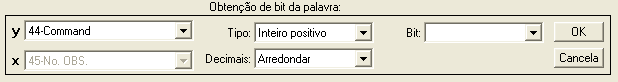
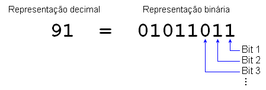
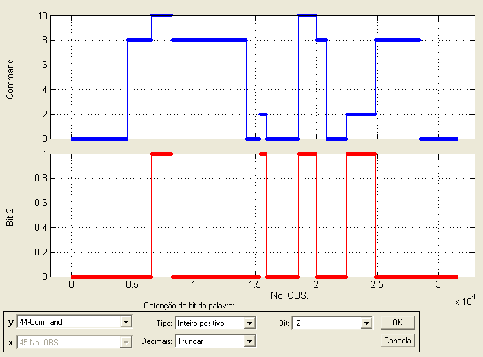
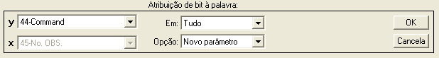
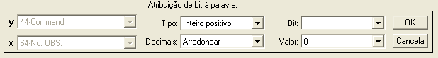
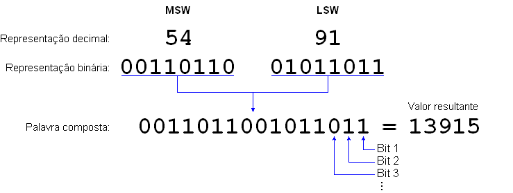
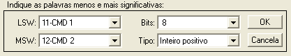

| Menu Dados |
|
Operações
Binárias
Essa função permite a realização de operações com a representação binária dos parâmetros (apenas para valores inteiros). É possível obter ou atribuir um determinado bit da representação binária (útil na análise de sinais de comando) e compor duas palavras binárias de forma a obter uma palavra maior. As opções disponíveis são:
Obter Bit da Palavra
Essa operação
permite extrair um bit específico de uma palavra, considerando a
representação binária do valor do parâmetro.
Clique no menu "Funções ►
Operações binárias ... ► Obter bit da
palavra”. A Caixa de Diálogo solicitará que o usuário indique os
parâmetros
para a operação:

● No campo “y”, indique o parâmetro a ser analisado.
● No campo “Tipo”, indique o tipo de representação binária do parâmetro. As opções são:
- Inteiro positivo: Representação binária simples. Valores negativos são zerados; e
- Complemento de 2: Representação usual para números inteiros positivos ou negativos.
● No campo “Decimais”, indique como a função deve tratar números não inteiros no parâmetro. As opções são:
- Arredondar: Arredonda os números não inteiros; e
- Truncar: Ignora a parte decimal dos números não inteiros.
● No campo “Bit”, indique o bit que deseja obter da representação decimal do parâmetro selecionado.
Os bits são numerados da direita para a esquerda (do menos ao mais significativo), conforme ilustrado no exemplo abaixo:


Ao clicar “OK”,
o usuário deverá fornecer o nome do novo
parâmetro:

Após definir o
nome e pressionar “OK”, o novo parâmetro será
acrescentado à penúltima posição das matrizes de trabalho (antes de
“No.OBS.”).
Atribuir Bit à Palavra
Essa operação
permite atribuir um valor (0 ou 1) a um bit específico de uma palavra, considerando a
representação binária do valor do parâmetro.
Clique no menu "Funções ► Operações binárias ... ► Atribuir bit à palavra”. A Caixa de Diálogo solicitará que o usuário indique os parâmetros para a operação em duas etapas:
Primeira etapa:

● No campo “y”, indique o parâmetro a ser alterado.
● No campo
“Opção”, indique se deseja criar um novo
parâmetro ou substituir o atual com os dados modificados.
Pressione "OK".
Segunda etapa:

● No campo “Tipo”, indique o tipo de representação binária do parâmetro. As opções são:
- Inteiro positivo: Representação binária simples. Valores negativos são zerados; e
- Complemento de 2: Representação usual para números inteiros positivos ou negativos.
● No campo “Decimais”, indique como a função deve tratar números não inteiros no parâmetro. As opções são:
- Arredondar: Arredonda os números não inteiros; e
- Truncar: Ignora a parte decimal dos números não inteiros.
● No campo “Bit”, indique o bit que deseja alterar na palavra armazenada.
● No campo “Valor”, indique o valor do bit que deseja atribuir à palavra armazenada (0 ou 1).
Os bits são numerados da direita para a esquerda (do menos ao mais significativo), conforme ilustrado no exemplo abaixo:
Ao pressionar
“OK”, o usuário deverá fornecer o nome do novo
parâmetro ou confirmar a substituição do parâmetro original, dependendo
da
seleção do campo “Opção”.

No primeiro
caso, após definir o nome e pressionar “OK”, o
novo parâmetro será acrescentado à penúltima posição das matrizes de
trabalho
(antes de “No.OBS.”).
No segundo
caso, ao clicar “Sim” o parâmetro será
atualizado.
Essa operação permite obter a representação decimal resultante da composição de duas palavras em representação binária, como ilustra a figura abaixo.
Os bits e as palavras são numerados da direita para a esquerda (do menos ao mais significativo).

Clique no menu "Funções ►
Operações binárias ... ► Composição de
palavras”. A Caixa de Diálogo solicitará que o usuário indique os
parâmetros
para a operação:

● No campo “LSW” ("Least Significant Word"), indique o parâmetro com a palavra menos significativa (parte direita da palavra).
● No campo “MSW” ("Most Significant Word"), indique o parâmetro com a palavra mais significativa (parte esquerda da palavra).
● No campo “Bits”, indique o número de bits de cada palavra. Essa entrada será ignorada caso o número de bits necessário para representar os valores dos parâmetros seja maior que o valor indicado.
● No campo “Tipo”, indique o tipo de representação binária do parâmetro composto. As opções são:
- Inteiro positivo: Representação binária simples; e
- Complemento de 2: Representação usual para números inteiros positivos ou negativos.
|
Nota: O
tipo "Complemento de 2" diz respeito apenas à conversão da palavra
composta para representação decimal. As palavras individuais (LSW e
MSW) são convertidas para representação binária sempre como se fossem
inteiros positivos (valores negativos são zerados). |
|
Nota: Valores de entrada decimais serão sempre arredondados para a conversão para representação binária. |
Ao clicar “OK”, o usuário deverá fornecer o nome do novo parâmetro:
Após definir o
nome e pressionar “OK”, o novo parâmetro será
acrescentado à penúltima posição das matrizes de trabalho (antes de
“No.OBS.”).
| |
Operações matemáticas | Interpolação
tabular |
|